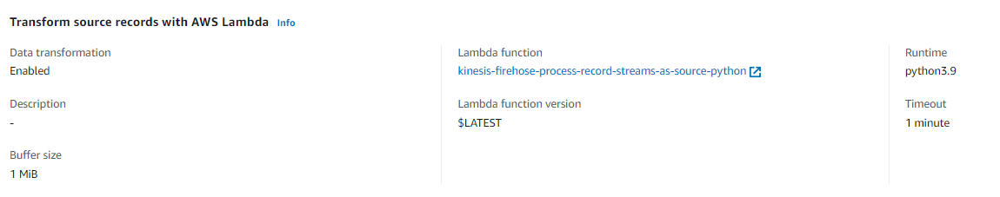
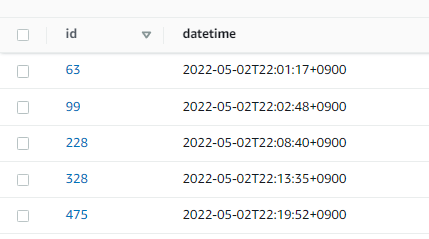

DynamoDBからkinesis firehose経由でS3に出力時にJSON形式からCSV形式に変換するLamdba用のPythonスクリプト
はじめに
DynamoDBへの更新をS3に連携したい場合は下記の通りkinesis firehoseを経由させることで簡単にできるようになった。（従来はDynamoDB-Lamdba-Kinesisとすることが必要だった。）
DynamoDBからkinesis firehose経由でS3に出力 | my opinion is my own 👋 https://zatoima.github.io/aws-dynamodb-to-s3-by-kinesis/
が、不要なレコードも一緒に出力されるので必要なものだけを抽出したい場合は、Kinesis firehoseの変換機能を使用する必要がある。Node.jsのスクリプトは公式からの提供されているが、Pythonはあまり見つけられなかった。
{"awsRegion":"ap-northeast-1","eventID":"1e84f1ca-438d-4837-a6bd-aa4592be6f8a","eventName":"MODIFY","userIdentity":null,"recordFormat":"application/json","tableName":"cities","dynamodb":{"ApproximateCreationDateTime":1651495525900,"Keys":{"key":{"S":"t0926"}},"NewImage":{"population":{"N":"54148"},"key":{"S":"t0926"},"name":{"S":"下野"},"date_mod":{"S":"1950-9-7"}},"OldImage":{"population":{"N":"56148"},"key":{"S":"t0926"},"name":{"S":"下野"},"date_mod":{"S":"1950-9-7"}},"SizeBytes":104},"eventSource":"aws:dynamodb"}
必要な設定
Firehose側でS3に保存時に変換したい場合は、Transform source records with AWS Lambdaをenableに設定してLambda Functionを設定する

DynamoDB側のテーブル構造
idとdatetimeだけが用意されているテーブル

下記スクリプトで適当にデータを挿入する。
for i in {0..10000}
do
NOW=`date --iso-8601=seconds`
aws dynamodb put-item --table-name dynamotest --item "{ \"datetime\": { \"S\": \"${NOW}\" }, \"id\": { \"S\": \"${i}\" } }"
echo $i
sleep $(($RANDOM % 5))
done
LambdaのPythonスクリプト
Kinesis Firehose側の決まりごとに沿う必要があることに注意。
Amazon Kinesis Data Firehose のデータ変換 - Amazon Kinesis Data Firehose https://docs.aws.amazon.com/ja_jp/firehose/latest/dev/data-transformation.html
DynamoDB StreamsとKinesis Data Firehoseを使ったサーバーレスリアルタイムETL - Qiita https://qiita.com/kzk-maeda/items/6dd02b9b567a6dd063fd
- Kinesis Data Firehoseから連携されたPayload Sizeが6MBを超えるときは、PayloadをFirehoseに戻す必要がある
- さらに、その戻すRecord数が500を超える場合は分割する必要がある
- Transform処理が完了したデータをFirehoseに戻す際、所定フォーマットにしたがった形式で、Dataの実態はbase64でencordする必要がある
下記のスクリプトはペイロード制限やRecord数は考慮していないので注意。更新量が多いDynamoDBに関しては要注意かもしれない。
import json
import base64
def lambda_handler(event, context):
results = []
records = event["records"]
for record in records:
record_id = record.get('recordId')
data = json.loads(base64.b64decode(record.get('data')))
#print("Raw Data : " + str(data))
id = data['dynamodb']['Keys']['id']['S']
datetime = data['dynamodb']['Keys']['datetime']['S']
#print("New Data : " + str(id) + str(datetime))
return_data = ','.join([id,datetime]) + '\n'
#print("return_data : " + str(return_data))
data = base64.b64encode(return_data.encode())
results.append({
"result":"Ok",
"recordId":record_id,
"data":data
})
return {
"records":results
}
なお、DynamoDB側から流れてくるJSONデータは下記なので、こちらのJSONデータをパースして必要なものだけを抽出する。今回はカラム（idとdatetime）に対する挿入操作をCSVで出力するようにした。
※サンプルなので、実際のカラムではないです
{
"Records": [
{
"eventID": "c4ca4238a0b923820dcc509a6f75849b",
"eventName": "INSERT",
"eventVersion": "1.1",
"eventSource": "aws:dynamodb",
"awsRegion": "us-east-1",
"dynamodb": {
"Keys": {
"Id": {
"N": "101"
}
},
"NewImage": {
"Message": {
"S": "New item!"
},
"Id": {
"N": "101"
}
},
"ApproximateCreationDateTime": 1428537600,
"SequenceNumber": "4421584500000000017450439091",
"SizeBytes": 26,
"StreamViewType": "NEW_AND_OLD_IMAGES"
},
"eventSourceARN": "arn:aws:dynamodb:us-east-1:123456789012:table/ExampleTableWithStream/stream/2015-06-27T00:48:05.899"
},
{
"eventID": "c81e728d9d4c2f636f067f89cc14862c",
"eventName": "MODIFY",
"eventVersion": "1.1",
"eventSource": "aws:dynamodb",
"awsRegion": "us-east-1",
"dynamodb": {
"Keys": {
"Id": {
"N": "101"
}
},
"NewImage": {
"Message": {
"S": "This item has changed"
},
"Id": {
"N": "101"
}
},
"OldImage": {
"Message": {
"S": "New item!"
},
"Id": {
"N": "101"
}
},
"ApproximateCreationDateTime": 1428537600,
"SequenceNumber": "4421584500000000017450439092",
"SizeBytes": 59,
"StreamViewType": "NEW_AND_OLD_IMAGES"
},
"eventSourceARN": "arn:aws:dynamodb:us-east-1:123456789012:table/ExampleTableWithStream/stream/2015-06-27T00:48:05.899"
},
{
"eventID": "eccbc87e4b5ce2fe28308fd9f2a7baf3",
"eventName": "REMOVE",
"eventVersion": "1.1",
"eventSource": "aws:dynamodb",
"awsRegion": "us-east-1",
"dynamodb": {
"Keys": {
"Id": {
"N": "101"
}
},
"OldImage": {
"Message": {
"S": "This item has changed"
},
"Id": {
"N": "101"
}
},
"ApproximateCreationDateTime": 1428537600,
"SequenceNumber": "4421584500000000017450439093",
"SizeBytes": 38,
"StreamViewType": "NEW_AND_OLD_IMAGES"
},
"eventSourceARN": "arn:aws:dynamodb:us-east-1:123456789012:table/ExampleTableWithStream/stream/2015-06-27T00:48:05.899"
}
]
}
後日追記①：
Node.jsであれば下記を参考
'use strict';
console.log('Loading function');
/* Stock Ticker format parser */
const parser = /^\{\"TICKER_SYMBOL\"\:\"[A-Z]+\"\,\"SECTOR\"\:"[A-Z]+\"\,\"CHANGE\"\:[-.0-9]+\,\"PRICE\"\:[-.0-9]+\}/;
exports.handler = (event, context, callback) => {
let success = 0; // Number of valid entries found
let failure = 0; // Number of invalid entries found
let dropped = 0; // Number of dropped entries
/* Process the list of records and transform them */
const output = event.records.map((record) => {
const entry = (new Buffer(record.data, 'base64')).toString('utf8');
let match = parser.exec(entry);
if (match) {
let parsed_match = JSON.parse(match);
var milliseconds = new Date().getTime();
/* Add timestamp and convert to CSV */
const result = `${milliseconds},${parsed_match.TICKER_SYMBOL},${parsed_match.SECTOR},${parsed_match.CHANGE},${parsed_match.PRICE}`+"\n";
const payload = (new Buffer(result, 'utf8')).toString('base64');
if (parsed_match.SECTOR != 'RETAIL') {
/* Dropped event, notify and leave the record intact */
dropped++;
return {
recordId: record.recordId,
result: 'Dropped',
data: record.data,
};
}
else {
/* Transformed event */
success++;
return {
recordId: record.recordId,
result: 'Ok',
data: payload,
};
}
}
else {
/* Failed event, notify the error and leave the record intact */
console.log("Failed event : "+ record.data);
failure++;
return {
recordId: record.recordId,
result: 'ProcessingFailed',
data: record.data,
};
}
/* This transformation is the "identity" transformation, the data is left intact
return {
recordId: record.recordId,
result: 'Ok',
data: record.data,
} */
});
console.log(`Processing completed. Successful records ${output.length}.`);
callback(null, { records: output });
};
後日追記②：
下記を全面的に採用させていただき、そのままではエラーで動作しなかったため、一部修正して動作するようにした。
DynamoDB StreamsとKinesis Data Firehoseを使ったサーバーレスリアルタイムETL - Qiita https://qiita.com/kzk-maeda/items/6dd02b9b567a6dd063fd
import json
import boto3
import base64
from datetime import datetime
PAYLOAD_MAX_SIZE = 6000000
MAX_RECORD_COUNT = 500
def transform(data):
"""
データ変換関数
"""
data['NewColumn'] = 'New Value'
# Change Schema
id = data['dynamodb']['Keys']['id']['S']
datetime = data['dynamodb']['Keys']['datetime']['S']
print("New Data : " + str(id) + str(datetime))
return_data = ','.join([id,datetime])
print("return_data : " + str(return_data))
return return_data
def proceed_records(records):
"""
transform each data and yield each record
"""
for record in records:
record_id = record.get('recordId')
data = json.loads(base64.b64decode(record.get('data')))
print("Raw Data : " + str(data))
try:
transformed_data = transform(data)
result = 'Ok'
except Exception as e:
print(e)
transformed_data = data
result = 'ProcessingFailed'
print("New Data : " + str(transformed_data))
proceeded_data = json.dumps(transformed_data) + '\n'
proceeded_data = str(transformed_data) + '\n'
return_record = {
"recordId": record_id,
"result": result,
"data": base64.b64encode(proceeded_data.encode('utf-8'))
}
yield return_record
def put_records_to_firehose(streamName, records, client):
print('Trying to return record to firehose')
print(f'Item count: {len(records)}')
print(f'Record: {str(records)}')
try:
response = client.put_record_batch(DeliveryStreamName=streamName, Records=records)
except Exception as e:
# failedRecords = records
errMsg = str(e)
print(errMsg)
def lambda_handler(event, context):
invocation_id = event.get('invocationId')
event_records = event.get('records')
# Transform Data
records = list(proceed_records(event_records))
# Check Data
projected_size = 0 # Responseサイズが6MBを超えない様制御
data_by_record_id = {rec['recordId']: _create_reingestion_record(rec) for rec in event['records']}
total_records_to_be_reingested = 0
records_to_reingest = []
put_record_batches = []
for idx, rec in enumerate(records):
if rec['result'] != 'Ok':
continue
projected_size += len(rec['data']) + len(rec['recordId'])
if projected_size > PAYLOAD_MAX_SIZE:
"""
Lambda 同期呼び出しモードには、リクエストとレスポンスの両方について、
ペイロードサイズに 6 MB の制限があります。
https://docs.aws.amazon.com/ja_jp/firehose/latest/dev/data-transformation.html
"""
print(f"Payload size has been exceeded over {PAYLOAD_MAX_SIZE/1000/1000}MB")
total_records_to_be_reingested += 1
records_to_reingest.append(
_get_reingestion_record(data_by_record_id[rec['recordId']])
)
records[idx]['result'] = 'Dropped'
del(records[idx]['data'])
if len(records_to_reingest) == MAX_RECORD_COUNT:
"""
Each PutRecordBatch request supports up to 500 records.
https://docs.aws.amazon.com/firehose/latest/APIReference/API_PutRecordBatch.html
"""
print(f'Records count has been exceeded over {MAX_RECORD_COUNT}')
put_record_batches.append(records_to_reingest)
records_to_reingest = []
if len(records_to_reingest) > 0:
# add the last batch
put_record_batches.append(records_to_reingest)
# iterate and call putRecordBatch for each group
records_reingested_already = 0
stream_arn = event['deliveryStreamArn']
region = stream_arn.split(':')[3]
stream_name = stream_arn.split('/')[1]
if len(put_record_batches) > 0:
client = boto3.client('firehose', region_name=region)
for record_batch in put_record_batches:
put_records_to_firehose(stream_name, record_batch, client)
records_reingested_already += len(record_batch)
print(f'Reingested {records_reingested_already}/{total_records_to_be_reingested} records out of {len(event["records"])}')
else:
print('No records to be reingested')
# Return records to Firehose
return_records = {
'records': records
}
print(str(return_records))
return return_records
# Transform method for temporary data
def _create_reingestion_record(original_record):
return {'data': base64.b64decode(original_record['data'])}
def _get_reingestion_record(re_ingestion_record):
return {'Data': re_ingestion_record['data']}
参考
- Amazon Kinesis Firehose Data Transformation with AWS Lambda | AWS Compute Blog https://aws.amazon.com/jp/blogs/compute/amazon-kinesis-firehose-data-transformation-with-aws-lambda/
- DynamoDB StreamsとKinesis Data Firehoseを使ったサーバーレスリアルタイムETL - Qiita https://qiita.com/kzk-maeda/items/6dd02b9b567a6dd063fd
- Amazon DynamoDB ストリームを使用して、順序付けされたデータをアプリケーション間でレプリケーションする方法 | Amazon Web Services ブログ https://aws.amazon.com/jp/blogs/news/how-to-perform-ordered-data-replication-between-applications-by-using-amazon-dynamodb-streams/
関連しているかもしれない記事
- DynamoDBからkinesis firehose経由でS3に出力
- Auroraの各バージョンのサポート期間
- Aurora PostgreSQLのDB監査方式（Database Activity Streams or pgaudit？）
- サーバ側と通信するCipher suite (暗号スイート) の調査方法
- S3のパブリックアクセスに関するブロックパブリックアクセスとバケットポリシーの関係